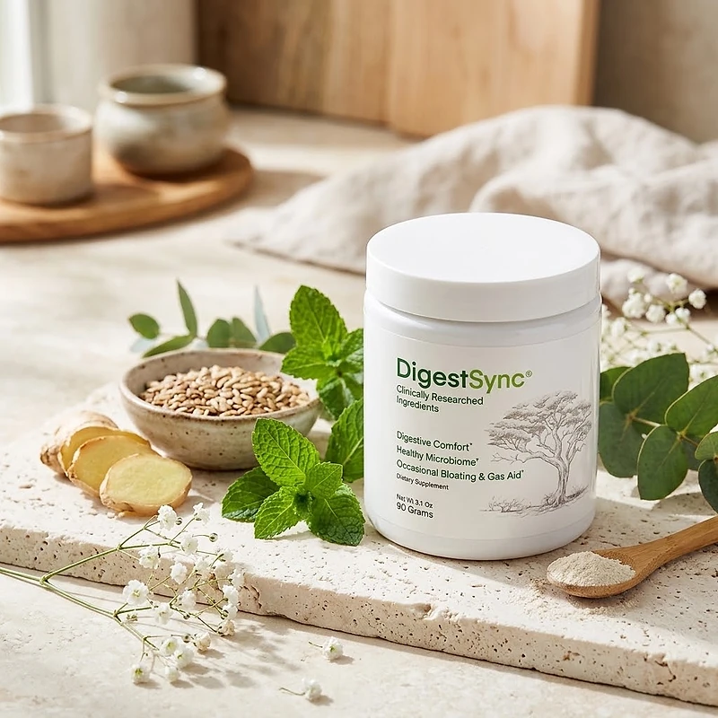
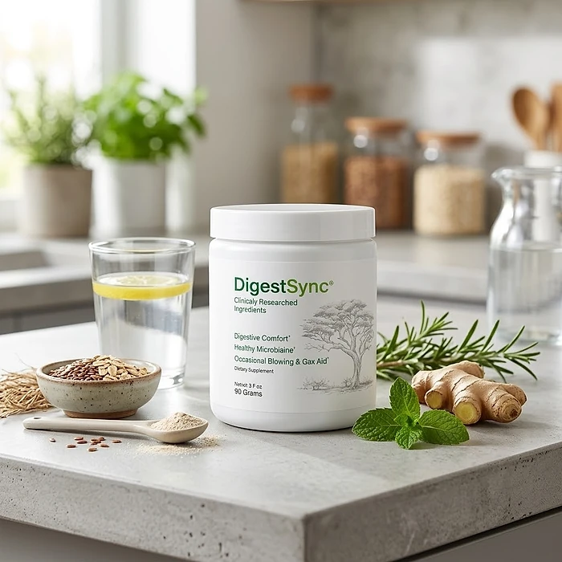

What Is DigestSync And How Does It Work?
DigestSync is a dietary supplement in powder form designed to support digestive comfort, a healthy microbiome, and relief from occasional bloating and gas for adults who want to address the heaviness, bloating, and sluggish digestion that can build up with age, stress, and busy routines through a natural, dependable approach — without restrictive diets or temporary quick fixes.
It utilizes a simple daily scoop that combines Pea Starch, Wildcrafted Baobab, Konjac Glucomannan, and Biogenic Polyamines to support comfortable digestion, a balanced gut, and smooth, regular digestion, helping the body maintain its natural balance throughout the day.
The ingredients in DigestSync are plant fibers, a fruit powder, and natural compounds that, according to the official website, are an optimally dosed proprietary blend carefully mixed to complement one another, particularly for adults who prefer one simple drink a day over multiple products or complicated plans. The official website also presents the formula as designed to support the vagus nerve, which helps manage the movement of food from the stomach to the intestines.
Rather than acting as a short-lived artificial fix, DigestSync focuses on a gut-first approach, working gradually alongside daily routines to help maintain comfortable digestion, regularity, and long-term wellness.
With consistent daily use, a formula of this kind is intended to help with less bloating after meals, a lighter feeling, and a gradual sense of digestive comfort, especially when combined with a fiber-rich diet, enough water, good sleep, and regular exercise.
From a practical standpoint, DigestSync is a daily digestive support powder designed to support wellness from within — helping you feel lighter, stay active, and remain in control of your health.
Assembled in the USA and manufactured in an FDA-registered facility, according to the product label, DigestSync is designed for regular daily use, with a formula the official website describes as natural, non-GMO, and free of stimulants, focusing on safety, purity, and quality for those seeking a natural, non-prescription route to digestive wellness.
DigestSync Ingredients
Every scoop of DigestSync (3 grams) contains a 2.4 g proprietary blend, listed on the Supplement Facts panel and chosen to support digestive comfort, a healthy microbiome, and relief from occasional bloating as part of a consistent daily routine. These are the four ingredients the official website highlights:
Pea Starch: A plant starch that includes resistant starch, a type of fiber that feeds the beneficial bacteria of the gut.
Wildcrafted Baobab: The fruit of the African baobab tree, rich in polyphenols and prebiotic fiber that support digestive balance.
Konjac Glucomannan (Amorphophallus konjac): A soluble fiber from the konjac root that absorbs water and supports regular bowel movements and a feeling of fullness.
Biogenic Polyamines: Natural compounds such as spermidine that the official website includes to support the gut lining.
Together, these ingredients work synergistically to support digestive comfort, regularity, and microbiome balance from within. The label also lists Sukre in the same blend, and it does not give the amount of each ingredient. The other ingredients are silicon dioxide, natural flavors, and stevia, and each jar holds 90 grams, or 30 servings.
DigestSync is designed for daily use, offering a natural, non-prescription approach to supporting digestive wellness, without stimulants or complicated routines.
DigestSync Side Effects
DigestSync is generally considered well tolerated and is designed for adults of different ages and lifestyles who are looking for a safe, natural, and balanced approach to digestive wellness, especially those who prefer an easy one-scoop daily routine to support digestion, comfort, and regularity without resorting to risky solutions with severe side effects.
The official website describes the formula as natural, non-GMO, stimulant-free, and not habit forming, with ingredients tested for purity, and DigestSync is manufactured in an FDA-registered facility, according to the product label, reinforcing consistency, safety, and reliability.
With no widespread reports of serious side effects, DigestSync is generally considered a well-tolerated option. A few points deserve attention: the formula is rich in fibers such as konjac glucomannan, which swells with water, so it should always be mixed in the recommended amount of liquid; and some people may notice mild, temporary gas or bloating in the first days as the gut adjusts. Persistent abdominal pain, blood in the stool, or a lasting change in bowel habits should be evaluated by a doctor. It is not intended to diagnose, treat, cure, or prevent any disease, and individual results may vary.
According to the label, pregnant or nursing mothers, children under the age of 18, and individuals with a known medical condition should consult a physician before using DigestSync. The official website adds that anyone taking prescription medication should show the jar to their doctor first, ensuring it fits safely within their personal wellness plan.
DigestSync Dosage
The recommended DigestSync dosage is one scoop a day mixed into 8 to 16 oz of liquid, and it is designed to fit easily into a daily routine, making consistency simple and convenient. Formulated as an easy daily powder, it requires no pills to swallow and nothing to measure beyond the scoop itself.
The recommended approach, as printed on the label, is to add one serving (1 scoop) to 8 to 16 oz of liquid and mix thoroughly. The official FAQ suggests adding DigestSync to your morning water, right before breakfast, at the same time each day, which allows its ingredients to work consistently.
For best results, consistency is key. Each jar contains 90 grams, or 30 scoops, a one-month supply, and because digestive and microbiome support builds gradually, many people make it part of an ongoing wellness routine.
There is no need for complex schedules or multi-step routines. One simple daily drink is designed to build lasting support gradually alongside a balanced diet, enough fiber and water, and an active lifestyle. The label also advises keeping the jar away from heat, light, and humidity and not using it if the safety seal is damaged or missing.
As with any dietary supplement, it's important not to exceed the recommended dose and to check the label on your jar. DigestSync works best when used regularly, combined with proper hydration, balanced nutrition, and healthy daily habits.
DigestSync – Refund Policy
You can order DigestSync with confidence, knowing that every purchase is protected by a 60-day money-back guarantee counted from the day the package is delivered. This allows you to try the formula and decide if it delivers the support you expect.
According to the refund policy on the official website, customers who are not fully satisfied can request their money back within 60 days of delivery. The policy recommends using the product for at least 3 months before deciding, and asks customers to send back all the jars, whether they are empty, opened, or sealed, together with the packing slip. The return shipping cost is paid by the customer.
How the refund process works: If you decide DigestSync is not right for you, email customer support with "Refund Request" in the subject line, then send all the jars to the return address given in the policy, in Largo, Florida, with a note containing your full name, email, and order number. Once the package is received, your refund is processed, and you receive an email confirming it.
Customer Support Contact Information: contact@digestsync-product.com, as printed on the product label and listed on the official website. Order questions can also be sent to BuyGoods, the retailer.
Refund Processing Time: According to the policy, processing takes between 5 and 10 days, and the time for the amount to appear on your statement depends on your bank or card company.
This refund policy is designed to give customers a clear and transparent experience when trying DigestSync.
DigestSync – Where To Buy
DigestSync is sold through its official website, so if you decide to try it, it's important to be careful about where you purchase it. The official website is the only sales channel the manufacturer lists, and it does not point to marketplaces such as Amazon, eBay, or Walmart.
Listings on third-party platforms may look similar but cannot be verified as authentic, raising concerns about safety, quality, and freshness. Products purchased outside the official source may not be covered by the 60-day money-back guarantee.
For this reason, it makes sense to purchase DigestSync only through the official website. Buying directly from the official source ensures you receive the authentic original product, assembled in the USA, with access to customer support and the full guarantee. According to the official website, every order is a one-off purchase with no hidden autoship, and orders are processed by BuyGoods, the retailer named on the site.
To avoid counterfeit batches and ensure maximum quality, always verify that you are ordering from the official DigestSync website before completing your purchase.
To ensure you’re getting the authentic product, most users choose to visit the official website.
Is DigestSync A Scam?
Based on what the official website and the product label disclose, DigestSync does not appear to be a scam. It is a real powder supplement, sold through an established retailer, and formulated to support digestive comfort, a healthy microbiome, and relief from occasional bloating as part of a consistent routine.
The ingredients used in DigestSync — Pea Starch, Wildcrafted Baobab, Konjac Glucomannan, and Biogenic Polyamines — are known in the wellness field, and the label publishes a Supplement Facts panel with the total amount of the blend, while the official website lists the scientific references behind the formula for transparency.
In addition to its formula, DigestSync is assembled in the USA and manufactured in an FDA-registered facility, according to the product label, which also identifies the distributor, with an address in Largo, Florida, and a support email, with a focus on safety, purity, and consistency.
The official website publishes no written customer testimonials, only an overall rating, so this review does not quote any. A fair point of criticism is that the website's FAQ uses strong language about fixing gut problems for good and says the formula suits all ages, while the label is more careful and says it is not intended for anyone under 18, so the label is the reference to trust. Results vary from person to person, and no supplement replaces medical care for persistent digestive problems.
DigestSync is backed by a 60-day money-back guarantee, and orders are one-off purchases with no hidden autoship. The refund steps, including sending back all jars and paying the return shipping, are published on the official website, which gives customers a clear path if the product does not meet their expectations.
If you're looking for a simple daily drink to support digestion, comfort, and well-being without complicated routines, DigestSync is worth considering — especially when purchased directly from the official website.
For those who want to verify product details or check current availability, the official DigestSync website remains the safest option.

Check Availability On Official Website